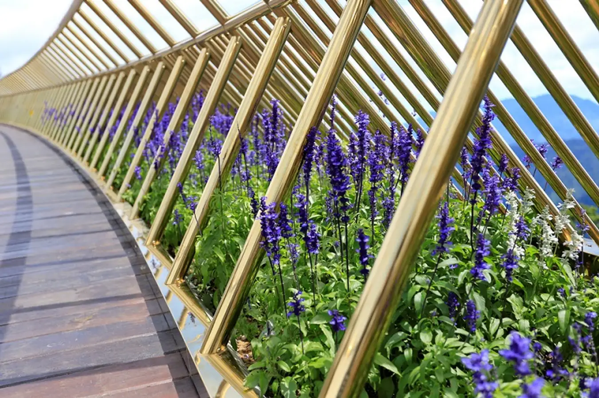

Cây cầu nối liền ga Marseille với vườn hoa Thiên Thai, được thiết kế dài 150m với 8 nhịp, 7 trụ và 2 mố. Nhìn toàn cảnh, cây cầu uốn lượn mềm mại như một dải lụa óng vàng vắt ngang chừng núi và được nâng niu bởi bàn tay phật khổng lồ.
Mặt cần có bề rộng 5m trong đó phần dành cho khách đi bộ là 3m, hai bên cầu dành diện tích để trồng hoa. Vỏ cầu được ốp bằng tấm thép sơn nhũ vàng. Lan can cầu được làm từ chất liệu inox mạ titan vàng dưới ánh nắng mặt trời càng rực rỡ và lấp lánh. Mặt cầu làm bằng gỗ kền kền cực bền chắc và phù hợp với điều kiện thời tiết khí hậu nơi đây.